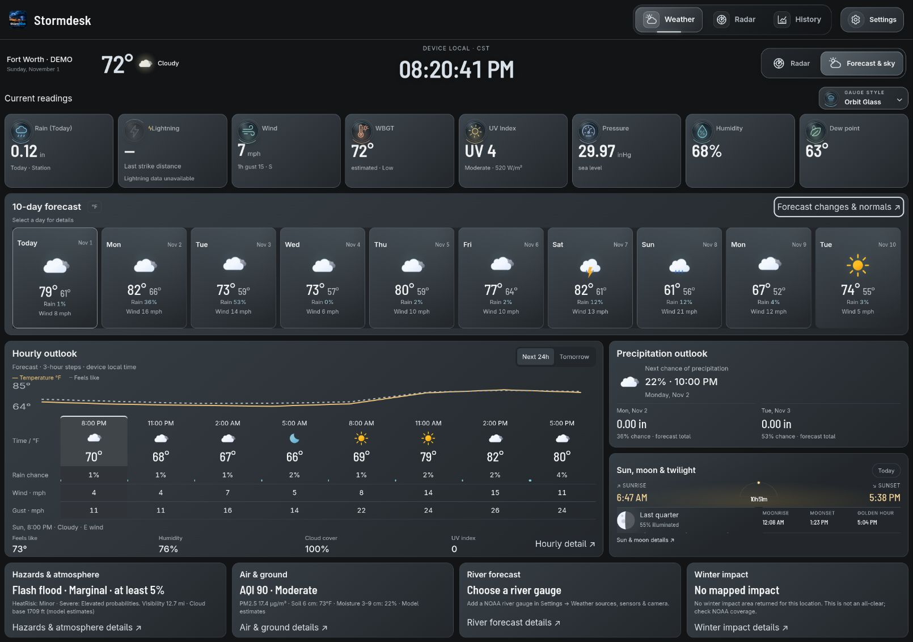
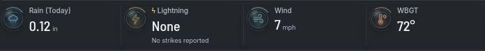
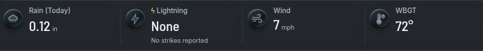
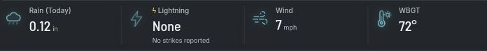
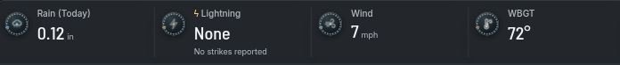
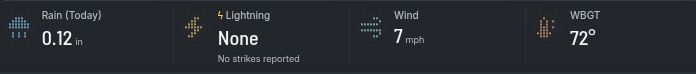
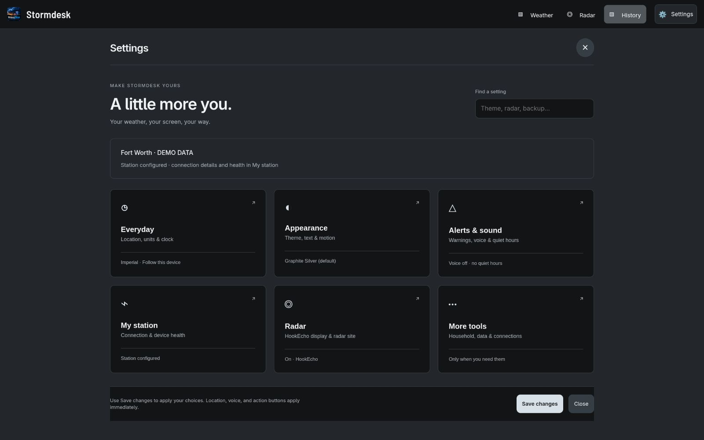
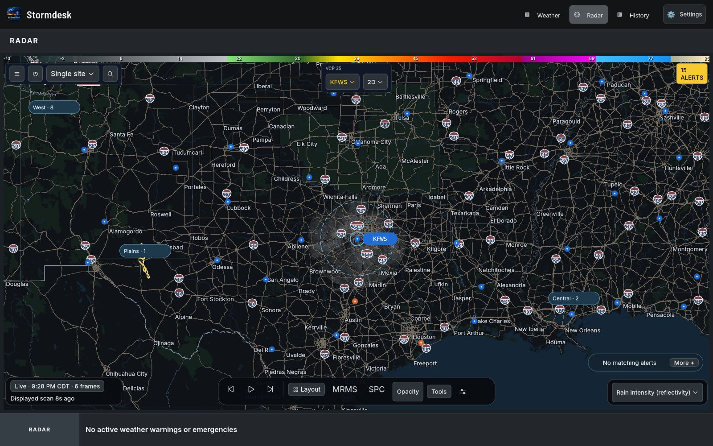
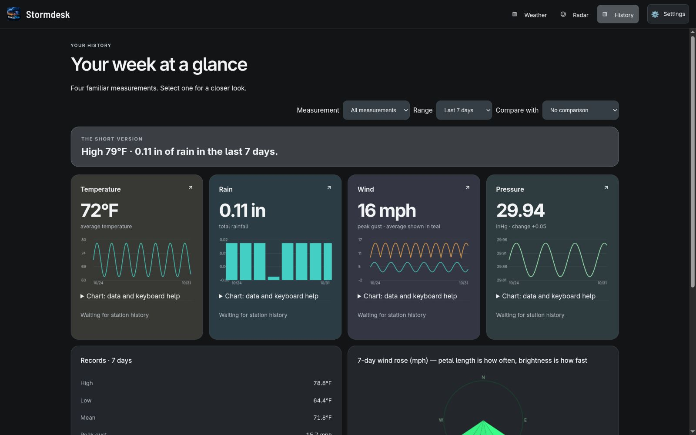
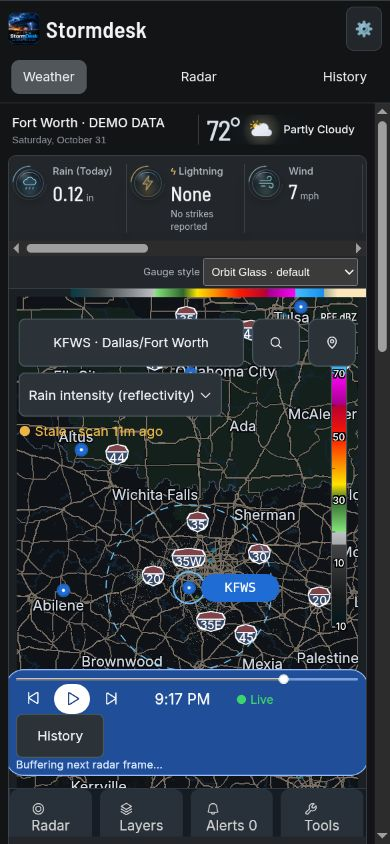

Just a location.
Search for a town or postcode. Open the forecast and radar without owning a weather station.
BALANCED DESK · FREE & OPEN SOURCE
Live weather, a balanced view. HookEcho radar, one click away.
Ten aligned forecast days span the page beneath larger live gauges, with hourly weather and compact astronomy below. Balanced Desk fits everyday weather into normal desktop windows; deeper forecasts, hazards and environmental context open in dialogs. Smaller screens reflow naturally, and HookEcho radar and history stay close by.
Start with a location. A weather station is optional.
YOUR SCREEN, YOUR STYLE
Change the Gauge style selector in the weather shelf. All five animated styles are included, and each screen remembers its choice. These close-ups show the first four of eight gauges; motion follows your accessibility settings.





Graphite Silver is the default palette. Ten dark palettes and classic light, high-contrast, and e-ink choices are available in Settings → Appearance.
THREE WAYS TO START
Start with what you have. Add the rest whenever you need it.
Search for a town or postcode. Open the forecast and radar without owning a weather station.
Connect a supported source. Install a host to collect readings and build your own local archive.
Connect to a running household host. Each screen keeps its own display preferences.
SETTINGS, SIMPLIFIED
Six clear cards put everyday choices within reach. Search for a setting, choose a category, and open specialist tools only when you need them.

05 / FOLLOW THE SIGNAL
A quick glance before heading out. A closer look when a storm rolls in. Explore the tools that turn readings into useful context.
Give the HookEcho map the screen. Official warnings and emergencies stay visible in a clear bottom banner.
Radar powered by HookEcho.io ↗
Explore severe-weather tools →
See up to ten aligned forecast days across the page, with hourly weather and compact astronomy below. Select a day or a context card for details. Forecast length and environmental coverage follow the data available from your provider.
Start with four measurement snapshots. On your installed host, explore charts and records, import CSV readings, add notes, review exclusions, and print monthly or annual reports.

06 / BUILT TO CONNECT
StormDesk connects directly or through the tools your station already supports. Start with a forecast anywhere in the world, then add station readings when you are ready.

07 / EVERY SCREEN
Run StormDesk on a computer, then view the same household weather on phones, tablets, laptops, and wall displays. Each screen keeps its own theme and display preferences. Rain, Lightning, Wind, WBGT, UV Index, Pressure, Humidity, and Dew point keep that order as the layout adapts.
Don’t own a station? Search for a place and use StormDesk as a worldwide forecast dashboard.
08 / FREE AND OPEN SOURCE
StormDesk is free under the MIT license. There are no StormDesk accounts, advertisements, or subscription tiers. Your station archive stays on the host you control.
StormDesk combines live readings, forecast context, astronomy, selectable gauge styles and optional HookEcho radar. Run it on Windows, macOS, Linux, Raspberry Pi, Android, or in the browser.
Read the source, report a problem, or contribute improvements through the public GitHub repository.
The website has no analytics scripts, and StormDesk does not require a product account.
09 / GOOD TO KNOW
No. Choose “Find my weather,” search for your town or postcode, and StormDesk will use worldwide forecast data.
Yes. A running StormDesk host can serve your household devices. Presentation settings stay local to each screen.
Returning to the same address preserves that browser’s settings. Moving from stormdesk.pages.dev to app.mystormdesk.com creates a new browser origin, so you will need to set up or pair that address once.
Start with the setup and troubleshooting guide. If the answer is not there, open an issue on GitHub.
Charcoal and amber.